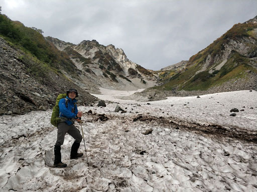
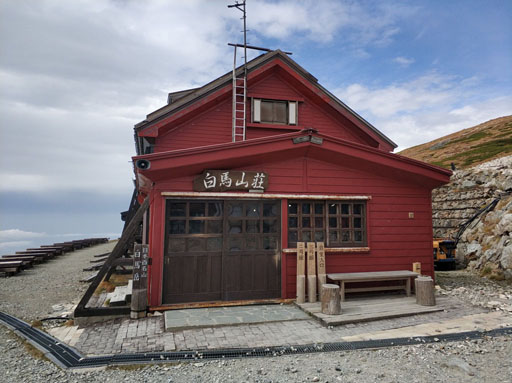
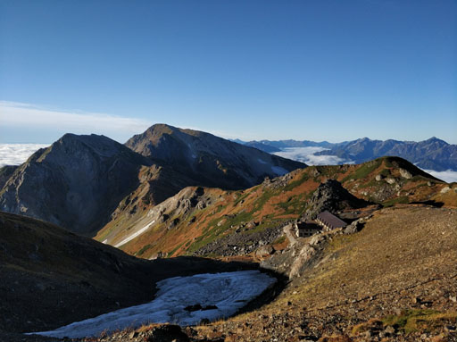
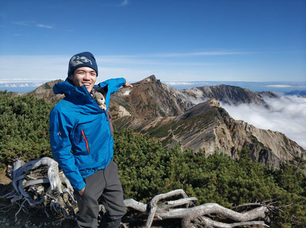
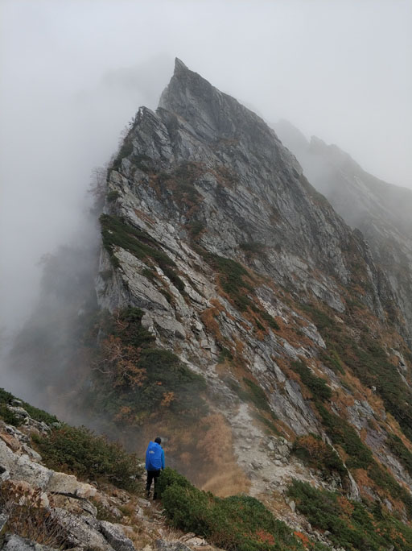
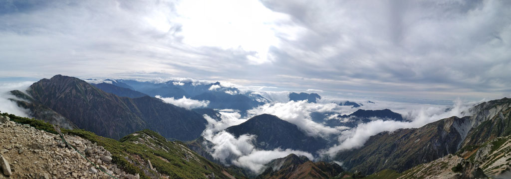
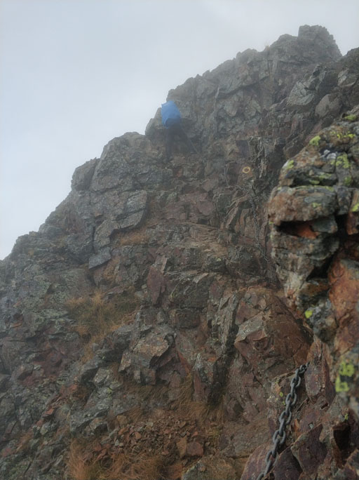
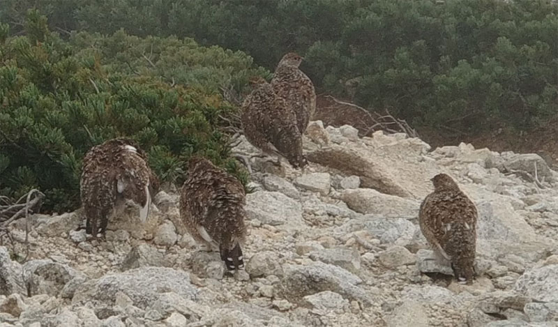
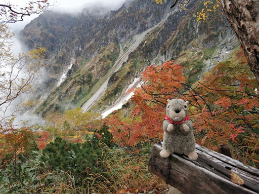
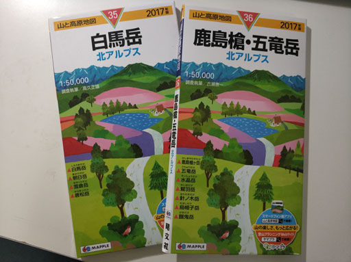

- 時間 : 2018.09.24 ~ 2018.09.27
- 登山路線 :
- Day 1 : 猿倉登山口→白馬尻小屋→白馬岳頂上宿舍→白馬山莊→白馬岳→白馬山莊
- Day 2 : 白馬山莊 (下大雨，待在山屋一整天)
- Day 3 : 白馬山莊→杓子岳→鑓ヶ岳→天狗山莊→不歸險前→唐松岳→唐松岳頂上山莊
- Day 4 : 唐松岳頂上山莊→五龍山莊→大遠見山→小遠見山→白馬五龍登山口
後立山連峰
- 後立山連峰，屬於北阿爾卑斯山脈的一段路線，在日本山岳界一直都是非常熱門的登山路線。沿路的白馬岳、唐松岳、五龍岳、鹿島槍，更是名列日本百名山之中。路線中的不歸險、八峰險也是日本山岳三大險。
- 走在稜線上，完全不輸台灣的聖稜線!!! 往左看和往右看，完全都是大景來的。地形面貌也是非常的豐富，加上路上時不時會聽到雷鳥的叫聲，實在可愛阿。
路線特色
白馬大雪溪

- 白馬的大雪溪基本上在日本國內也是非常知名的路線，原本為了這段路線，還特地與Bella, Lisa租了冰爪，只是到了現場，發現其實9月底的大雪溪已經不需要冰爪。走在雪溪上面的感覺，很像是4月春雪滑雪的那個腳感。
白馬山莊

- 全日本最大的山莊，基本上一進去的時候，我和Kent哥都著實嚇傻了，實在高級的沒話說。我們兩個人就住了塌塌米包廂。還在那裡點了起士蛋糕和咖啡來喝。附的晚餐還有早餐，基本上完全不輸山下的日式旅館。晚上的時候，還有交誼廳可以窩著，裡面很多日本的山岳雜誌可以翻閱，整體來說，根本是目前我住過最豪華的山屋。
白馬岳

- 我們攻頂的時候，剛好起大霧，並沒有看到絕佳的視野。但是已經可以完整看到往栂池高原的稜線。還好隔天一大早早起的時候，View全部都出現了。
鑓ヶ岳

- 鑓ヶ岳是我覺得整個路段視野最佳的山頭(也有可能當時天氣最好)，往北看可以近看白馬岳，往南看可以看到唐松岳、五龍岳、鹿島槍的稜線，遠遠看還看的到黑部水庫。走在稜線上的時候，可以一直看到劍岳(山型非常好認)，遠遠看也可以看的到槍岳。這一段路線不難，走起來非常舒適，是極度享受的一段路線。
不歸之險

- 基本上這個路段，是我們出發前研究最多的路段，也不停反覆看這一段的行走記錄。但真的走到的時候，其實覺得還好，可能跟一經走過聖稜線得經驗有關，一直把這一段跟素密達那段一進行比較，但是這一段的地型雖然非常險峻，但是安全設施也做得非常完整，走起來雖然還是需要非常謹慎，但安全感十足。
唐松岳

- 離開不歸險，就會攻上唐松岳了，這是視野極好的山頭。我們在這裡不斷地看到遠遠的雲瀑，不停的滾。而唐松岳也是知名白馬雪場八方尾根的山頭。
唐松岳牛首

- 第四天，一開始離開唐松岳頂上山莊的時候，就馬上會經過這一段了。這一段其實非常的不好走，能夠通行的路徑算是蠻窄的，一不小心會容易發生一些意外。雖然沿路的鐵鍊架設的蠻穩的，但還是要非常謹慎通過的路段。
雷鳥

- 這是白馬區域特有的鳥類，也是日本本土的保育類動物，超級可愛，但反應很遲鈍，沿路運氣好的時候都看的到。
遠見尾根

- 遠見尾根是這次最意外的路線了，原本計畫是要過五龍岳到鹿島槍，但是因為第二天天候不佳，我們路線延後一天，所以第四天改由遠見尾根撤退，但沒想到這時的遠見尾根是楓葉季，超級漂亮!!
行前工作
山岳地圖

- 山岳地圖對於登山來說，超級重要，尤其是第一次行走的登山路線。不管是沿路問路、判斷方向、認山頭、判斷位置、估時間…，幾乎是不可或缺的物品。
- 因為第一次進行日本長天數縱走，所以在上一次到日本的時候，就已經在Mont-bell買了這兩本地圖。
- 日本的登山App其實也做的超好，這次我是用YAMAP，真得很方便操作，而且可以隨時GPS定位，並顯示已經到達的地圖位置。下一次進行日本登山的話，也還會繼續使用。
山屋登記
入山證申請
- 長野縣入山證申請網站
- 這次我是去長野縣的觀光課進行申請，跟台灣一樣，要有登山計畫以前登山隊伍各個人員的基本資料以及連絡電話、方式。如果這邊沒申請的話，到了猿倉登山口還可以申請，但還是建議先網路申請好，到時後直接在登山口投進信箱即可。
登山保險
- 日本有一點跟台灣最大的不同是，登山保險的購買，因為國外登山保險制度比較完整個關係，通常都會包含救難險及直升機補助(台灣登山險目前沒有)。
- 之前原本想要買當地的登山保險，可是查了查，發現日本當地的登山保險是需要登記戶籍在日本本地的，對於我們這種外籍人士，似乎沒有提供購買管道。
- 後來是選擇了World Nomads，因為他有保日本山岳區域包含了救難、直升機的保險。
天氣觀測
- 出發前，我是用Tekki.jp在這裡不停觀察天氣，到了當地後，就是根據山屋提供的天氣預報了。
網路狀況
- 白馬三山區域，在到達山頂前，網路都還蠻順的，但後來在稜線上走，網路其實不太好，一直到下切到遠見尾根，才又很順。
登山心得
- 原本是打算走完五龍岳和鹿島槍，但是登山就是這樣，安全最重要，天候狀況太難掌握，也因為這樣，也意外看到遠見尾根的楓葉。
- 第一次的日本山岳縱走，非常讓人驚艷，日本的登山文化和登山環境整體來說都比台灣進步太多了，真得很多可以學習比較的地方。
- 如果可以，以後有機會，會想反方向，來個鹿島槍來回路線也不錯。